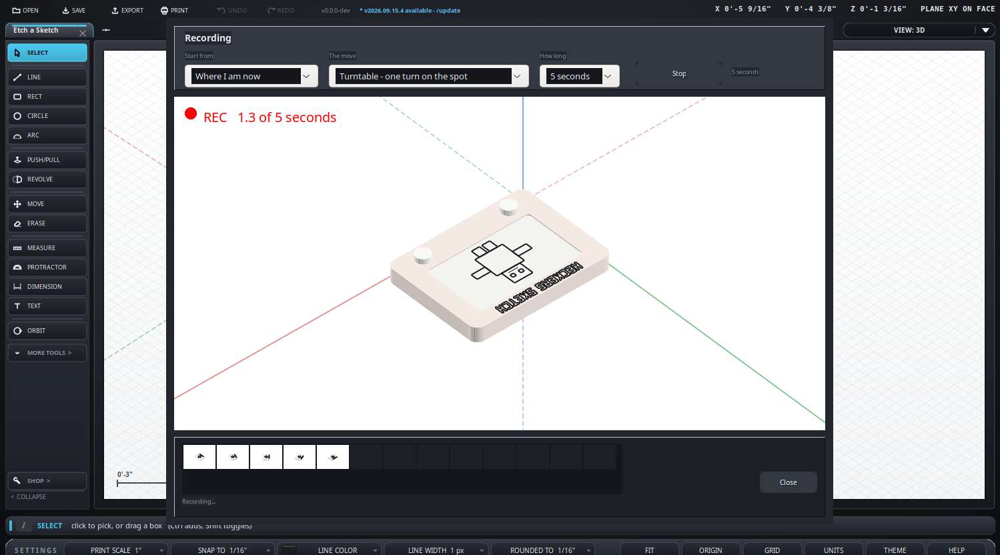

Theme
- In the export dialog pick GIF, then Record a move.
- Choose where to start from - front, back, left, right, top, or a corner.
- Choose the move: one of the canned walks, or point it yourself.
- Choose how long it runs. That decides the frame rate, not the other way round.
- Press Record. It counts you in from three, then rolls.
- The strip along the bottom fills with snapshots so you can see it working.
- Play it, Clear it and go again, or Use this clip.
- Everything turns about the middle of whatever you had selected.
What it looks like

Part way through a take: the model turning, the count in the corner, and the strip along the bottom filling as the frames come in.